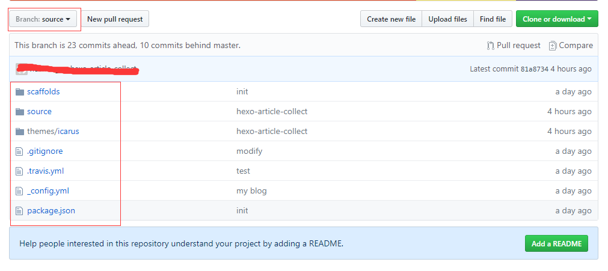
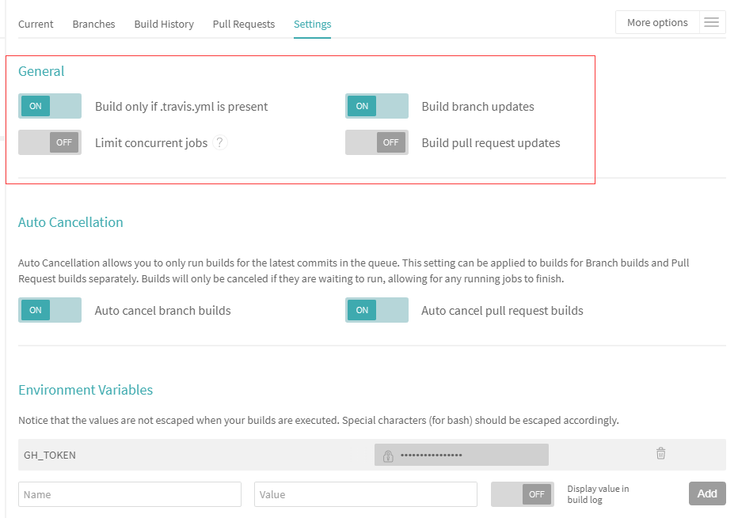
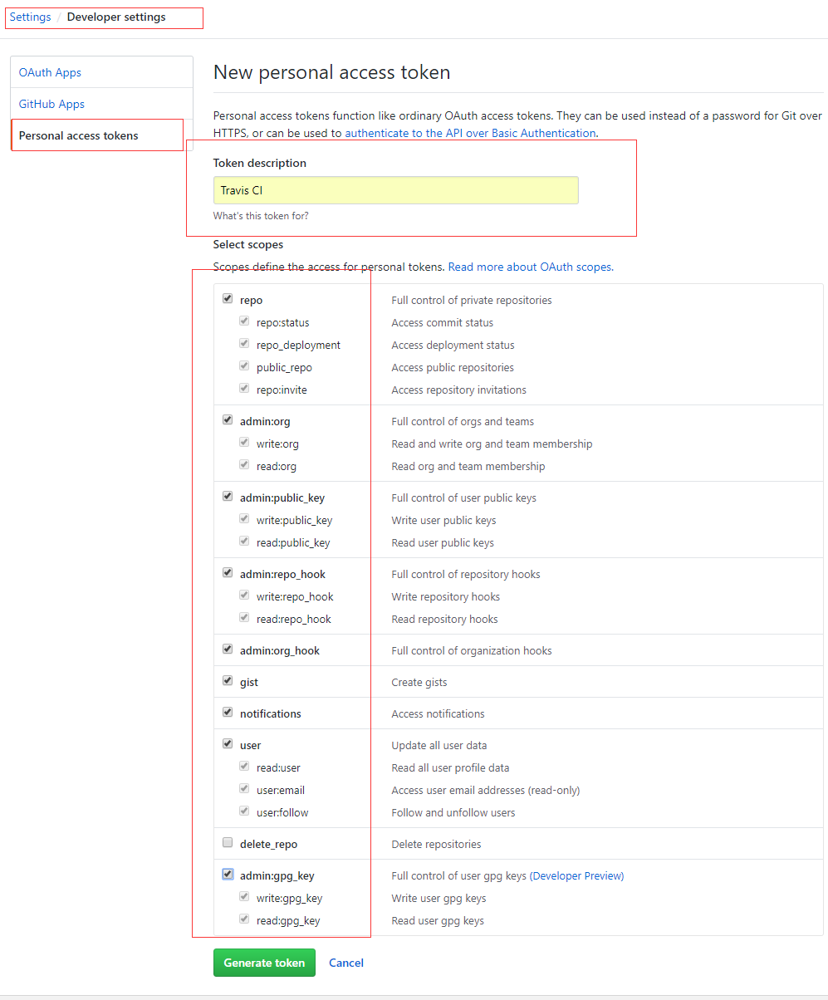
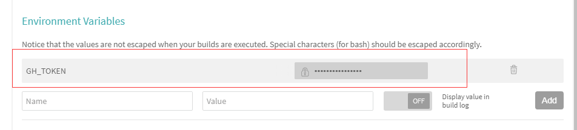

Hexo博客托管Github Pages并结合Travis CI自动部署
用hexo博客写作已经是很方便了，部署也只要deploy到github上即可，但是还是受限于需要node.js环境，而且还不能通过浏览器写作。那么问题来了，有没有这种操作，我只要一提交文章代码，就自动构建出静态网站并部署上去呢？答案当然是有的，那就是接下来要介绍的Travis CI。
1.登陆Travis CI官网
假设已经有一个hexo博客并托管在GitHub Pages，此时应该有一个Repository叫yourname.github.io。
登陆Travis CI官网，并且用github账号登陆，此时会自动关联所有github上的仓库，
页面左边My Repositories右边有个’+’号,点击选择yourname.github.io项目，这里说明一点，该项目应该有2个分支，master分支用来部署博客页面，然后source（也可以叫别的名字）是博客源码（包括文章，主题等)。

注意: package.json文件很重要，里面包含了项目依赖
添加完项目后，选择如下配置:

2.登陆github网站
主要是为了设置personal access token,画面如下:

设置完成会获得一串token，复制下来等会要配置到Travis CI网站上。
3.配置Access Token
回到Travis CI网站，把刚才的access token值配置上去，就在刚才项目配置页面,新增一个环境变量叫GH_TOKEN,

4.编写.travis.yml文件
Travis CI自动构建想要成功，必须正确配置.travis.yml文件，该文件放置位置为source分支下根目录。
整理如下:
1
2
3
4
5
6
7
8
9
10
11
12
13
14
15
16
17
18
19
20
21
22
23
24
25
26
27
28
29
30
31
32
33
34
35
36
37
38
| language: node_js
node_js: stable
cache:
apt: true
directories:
- node_modules
before_install:
- export TZ='Asia/Shanghai'
install:
- npm install
script:
- hexo clean
- hexo g
after_script:
- git clone https://${GH_REF} .deploy_git
- cd .deploy_git
- git checkout master
- cd ../
- mv .deploy_git/.git/ ./public/
- cd ./public
- git config user.name "name"
- git config user.email "email"
- git add .
- git commit -m "Travis CI Auto Builder at `date +"%Y-%m-%d %H:%M"`"
- git push --force --quiet "https://${GH_TOKEN}@${GH_REF}" master:master
branches:
only:
- source
env:
global:
- GH_REF: github.com/yourname/yourname.github.io.git
|